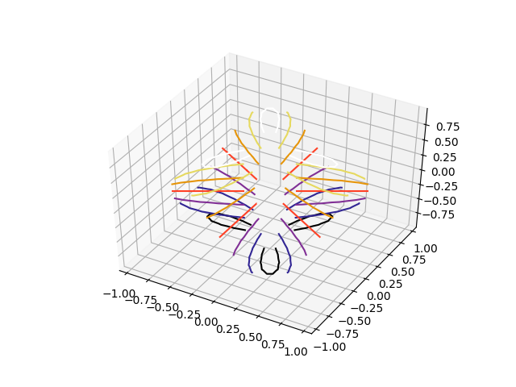

Version 2.2.0
Contour plots of unstructured triangular grids.
The data used is the same as in the second plot of trisurf3d_demo2. tricontourf3d_demo shows the filled version of this example.
import matplotlib.pyplot as plt
from mpl_toolkits.mplot3d import Axes3D
import matplotlib.tri as tri
import numpy as np
n_angles = 48
n_radii = 8
min_radius = 0.25
# Create the mesh in polar coordinates and compute x, y, z.
radii = np.linspace(min_radius, 0.95, n_radii)
angles = np.linspace(0, 2*np.pi, n_angles, endpoint=False)
angles = np.repeat(angles[..., np.newaxis], n_radii, axis=1)
angles[:, 1::2] += np.pi/n_angles
x = (radii*np.cos(angles)).flatten()
y = (radii*np.sin(angles)).flatten()
z = (np.cos(radii)*np.cos(3*angles)).flatten()
# Create a custom triangulation.
triang = tri.Triangulation(x, y)
# Mask off unwanted triangles.
triang.set_mask(np.hypot(x[triang.triangles].mean(axis=1),
y[triang.triangles].mean(axis=1))
< min_radius)
fig = plt.figure()
ax = fig.gca(projection='3d')
ax.tricontour(triang, z, cmap=plt.cm.CMRmap)
# Customize the view angle so it's easier to understand the plot.
ax.view_init(elev=45.)
plt.show()